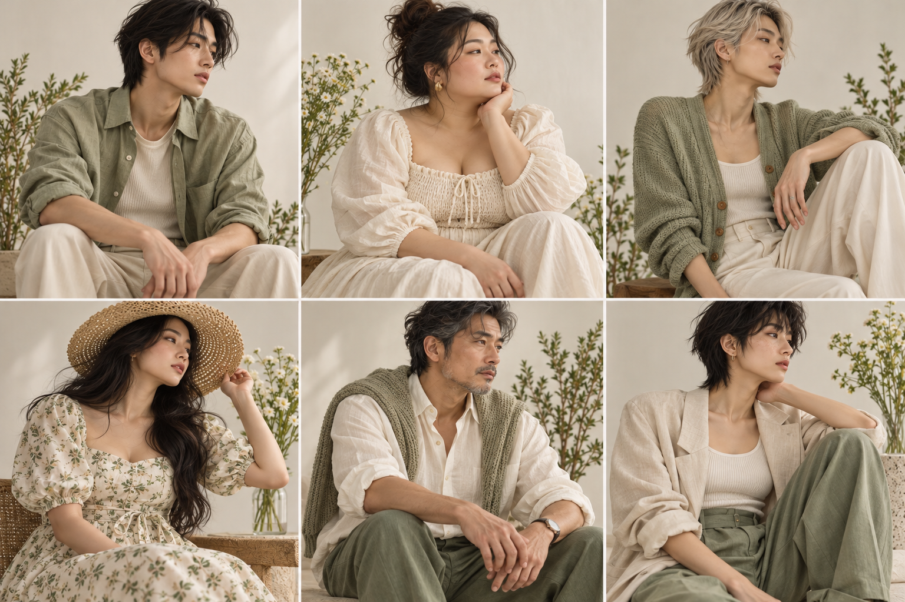

返回 CH6 模板速查站
(C6)
Lookbook Grid 服飾穿搭多格拼貼
服飾、選物、配飾的「lookbook」多格拼貼——4-9 格的穿搭組合 / 商品輪播 / 風格提案。本地服飾品牌、選物店、個人造型師接案最高頻。重點是「整組調性一致 + 每格獨立可用 + 整體像雜誌頁面」。
這張卡片你會學到
能判斷何時用 lookbook（與電商主圖差異）
能拆解 6 段並安排多格拼貼節奏
能識別 4 種踩雷（風格漂移／模特同質化／背景搶戲／構圖過度設計）
(01)
適用場景
這個模板用在哪
lookbook 多格拼貼。4-9 個 Look 並列（每格 1 套穿搭）、整體調性一致、像雜誌跨頁或服飾品牌官網系列頁。比 C1 bento 重視覺感、比 B1 電商主圖更有故事。
典型客戶 / 交付物 本地服飾品牌 / 選物店 / 個人造型師；交付：lookbook 6 格拼貼 1 張。報價依服裝套數、人物與攝影素材授權、修改次數、後製與輸出尺寸估算。
四個典型用途：
- 服飾品牌換季 lookbook（本地小型服飾、選物店、個人品牌）
- 個人造型師作品集（造型作品集一頁總覽）
- 配飾 / 飾品系列展示（手作品牌、個人飾品創作者）
- 選品店每月新品輪播（Pinkoi、選物店週報）
| 對比項 | 本卡片 · C6 Lookbook Grid 服飾穿搭多格拼貼 | 近似模板 |
|---|---|---|
| 構圖 | 4-9 格 grid、每格獨立可用 | B1：單一商品；C1：資訊塊 |
| 人物 | 通常含模特半身或全身 | B1：嚴禁；C4：單一人物 |
| 整組調性 | 必須一致（光線 / 色板 / 季節） | 其他：通常單一構圖 |
| 適用商品 | 服飾 / 配飾 / 飾品 / 鞋履 | B1：泛用；B6：飲料 |
| 使用平台 | Pinkoi / 選物店官網 / IG | B1：蝦皮；C1：IG 教學 |
| 接案類型 | 服飾品牌 / 選物店 / 個人造型師 | B 組：商品；C1-C5：自媒體 |
一句話判斷：客戶問「我有 6 套穿搭怎麼一張圖呈現」走 C6；問「單品上架圖」走 B1；問「選物店週報」走 C1。若涉及真人、模特兒或客戶服裝照片，先確認肖像、攝影與使用範圍授權。
(02)
模板拆解｜6 段 prompt 結構
lookbook grid 6 段。核心難度在「服裝、光線與構圖一致」。人物多樣性與品牌一致性可以同時成立，不應用單一族群或體型作為一致性的捷徑：
| 段 | 段落 | 必問還是可預設 | 填什麼 |
|---|---|---|---|
| 1 | 系列主題 | 必問 | 系列名 + 季節（春／夏／秋／冬）+ 風格定位（極簡 / 復古 / 街頭 / 文青） |
| 2 | grid system | 必問 | 格數（4 / 6 / 9）+ 比例（每格 1:1 或 4:5） |
| 3 | models 模特 | 必問 | 是否虛構或已授權；以服裝輪廓、姿態、鏡位與光線維持系列感，不把性別、體型或族群當作一致性門檻 |
| 4 | outfits 穿搭組合 | 必問 | 每格 1 套 Look：上衣 + 下身 + 配飾 + 鞋（每格描述清楚） |
| 5 | background 背景 | 可預設 | 整組共用 1 個背景（米白棚拍 / 都市街頭 / 自然戶外）；不要每格不同背景 |
| 6 | 限制 | 固定寫死 | 禁忌：模特正臉直視、整組光線不一致、背景每格不同、商品搶過模特、文字遮商品 |
記憶口訣：系列 → 格 → 人物權利 → 穿搭 → 背景 → 禁。一致性鎖在鏡位、色板、光線、服裝線條與後製，不要求人物長相一致，也不把多元呈現描述成視覺問題。
(03)
示範圖｜可複製、可重現
下面這張是春季服飾 lookbook 6 格拼貼候選。3×2 網格使用六位可明確區分的虛構成年模特，涵蓋不同年齡感、體型與性別表現；服裝維持米白與鼠尾草綠色系，適合用來檢查「系列一致、人物不重複」是否同時成立。

完整 prompt · LUME 春季 lookbook 6 格拼貼
請生成一張服飾品牌 lookbook 6 格拼貼： 【整體】4:5 直立比例、3×2 網格排版、整體像「文青服飾品牌官網 collection 頁面」。 【系列主題】「LUME · Spring 2026」（米白色系、文青風、極簡剪裁） 【grid 系統】3 行 × 2 欄、共 6 格、每格 1:1 比例、格間距 2%。 【模特】使用 6 位虛構且可明確區分的成年模特；不模仿真實人物： - 人物呈現：可包含不同性別表現與體型，不以族群、膚色或身材作為系列一致性條件 - 年齡：皆為成年人，約 25-40 歲 - 一致性來源：服裝輪廓、姿態節奏、相機高度、光線與色板 - 構圖：半身（腰部以上）+ 雙手自然下垂或輕觸衣物 - 視線：不直視鏡頭（看遠 / 低頭 / 側臉） - 表情：自然平靜、不要笑 【6 套穿搭（每格 1 Look）】 1. 米白色 oversized 棉質襯衫 + 寬腳長褲 + 米色帆布鞋 2. 淺米色針織背心 + 白色 T 恤 + 卡其長裙 3. 米色西裝外套 + 白色 T 恤 + 寬腳褲 4. 米白色亞麻 oversized 上衣 + 白色短褲 5. 淺杏色針織開衫 + 白色 T 恤 + 米色長褲 6. 米色亞麻洋裝（過膝）+ 米色腰帶 【背景】6 格共用：米白色棚拍底、極淺自然光、無紋理、無雜物。 【整組調性】統一光線（暖白柔光、無方向性）+ 統一後期色調（低飽和、米色系）+ 統一構圖（半身、置中略偏左）。 【色板】嚴格 3 色：米白底 + 米杏色服裝 + 卡其／米色配件。 【限制】嚴禁模特正臉直視、嚴禁整組光線不一致、嚴禁背景每格不同、嚴禁鮮艷色穿搭（一定要在米色系內）、嚴禁中文字、嚴禁過度修圖（要保留布料紋理）。
讀圖時看這 4 個點：(1) 6 格是否靠鏡位、姿態節奏與服裝輪廓形成系列感，而非把人物做成同一張臉？(2) 整組光線一致嗎？(3) 色板是否統一？(4) 是否避開真實人物相似與刻板印象？
(04)
改成你的場景｜踩雷與失敗案例
把 prompt 拿來、改 3 個替換槽就變你的版本：
| 替換槽 | 你的版本 |
|---|---|
| ⓐ 系列主題 + 風格 = ? | 例：春日米色系（文青）／夏日海軍藍（清爽）／秋日大地色（日系） |
| ⓑ 模特與代表性 = ? | 例：6 位虛構成年人，呈現多種性別表現與體型；固定鏡位、姿態節奏、光線與服裝輪廓 |
| ⓒ 6 套穿搭 = ? | 例：上衣＋下身＋鞋（每格 1 Look） |
最常見的 4 種踩雷：
- 把人物同質化誤當系列感 要求所有模特同族群、同體型，會製造排除與偏見，也不能真正解決視覺漂移。解法：固定相機高度、姿態節奏、背景、光線、色板、服裝輪廓與後製；人物使用虛構或已授權素材，並檢查代表性與刻板印象。
- 整組光線不一致 AI 第 1 格暖光、第 4 格冷光、看起來像不同時段拍的。解法：明確寫「all 6 frames must have identical lighting: same direction, same color temperature, same shadow softness」。
- 背景每格不同 AI 給你 6 個不同背景（咖啡店 / 街頭 / 棚拍 / 戶外）——客戶會困惑這是同 lookbook 嗎？解法：明確寫「all 6 frames share the same background setting」「single backdrop type across all looks」。
- 中文系列名要人工校稿 系列名是品牌核心文字，生成後仍可能有字形與拼寫問題。C6 的策略：生圖先留乾淨文字區，正式中英文系列名都走 後製字體疊圖工作流附錄。
實戰提醒：若客戶有季度需求，先確認每季的範圍、素材、授權與修改次數，再提出單季或多季方案；報價依實際工時與責任估算。
交付提醒 本卡片的 AI 生成的示範圖不是可直接給客戶的最終交付品。中文商業案一律先用 AI 生出構圖（含英文佔位文字）、再走 後製字體疊圖工作流 在 Figma／Canva 疊上中文、最後校稿確認才交付給客戶。
本卡片改寫自 ConardLi／garden-skills 之
lookbook-grid.md 模板（MIT License、2026），已對中文進行台灣用語在地化、加入本地接案情境與失敗案例。